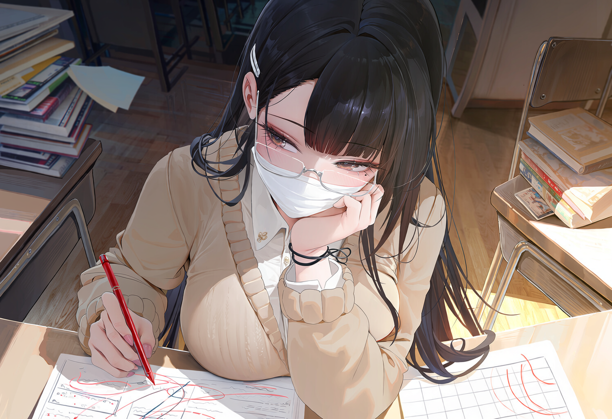

看什么看。
视线退回到你那边去。
2月27日，下午第二节课后。百日誓师的红幅还在操场风里翻卷，班主任刚把黑板右上角的数字改成 100。你的同桌把目标卡扣在桌上，左手压着第一行字，右手转着一支抠光贴纸的晨光水笔。
致远楼 · 高三（7）班靠窗01 / 05
周清禾眼皮没抬 · 压着卡片
防线
第一格
心里
点画面上的三张字条，看她手指怎么收紧 · 空格 / 回车推进
02 / 来处
那身校服穿大两码之前
水房、冷水池、校门一百米外的旧三轮、床底的曲奇铁盒。她把这些事按顺序锁起来，钥匙从来不给人看。
03 / 隔桌
离她半步远，听她怎么把心虚说成道理
鼠标停在她身上，她会看回来。点她耳后、镜片、口罩、领口、校服、手背或鞋跟，听她把每一处破绽解释成自然现象。
周清禾
视线落点0 / 7
百日衣橱已解锁 1 / 16
燕麦收腰学院装
点她身上也可以 · 后 6 套衣橱需要先撕开封条
03.5 / 手记
周清禾 · 同桌手记
学籍、桌角旧物，以及七张还没显影的课桌物证。看过的地方会留在纸上。
每次碰她身上一处，这里就会显影一张。七张集齐，才算真的把她的破绽看全。
第十一页 · 她没打算给任何人看
方格是拿尺子一页页画的。红笔是抄给你的辅助线，蓝笔是她自己算错的。右下角那点红油，是晚自习偷吃辣条留下的。
04 / 百日
一百天里要做的事
把数学拉过一百，把那双磨脚的旧鞋换掉，再把她藏在深夜里的声音，往更远的地方推一点。

D1 · 讲数学
走读地图
05 / 落座
拉开靠窗外侧那张椅子之前，你是谁？
七种来路，决定了你兜里有多少零钱、会什么手艺，以及她第一眼防你几分。选定之后，在目标卡上按下手印。
STEP 2 · 填写同桌信息
性别